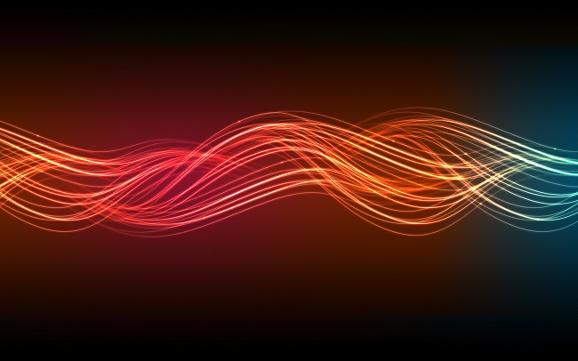
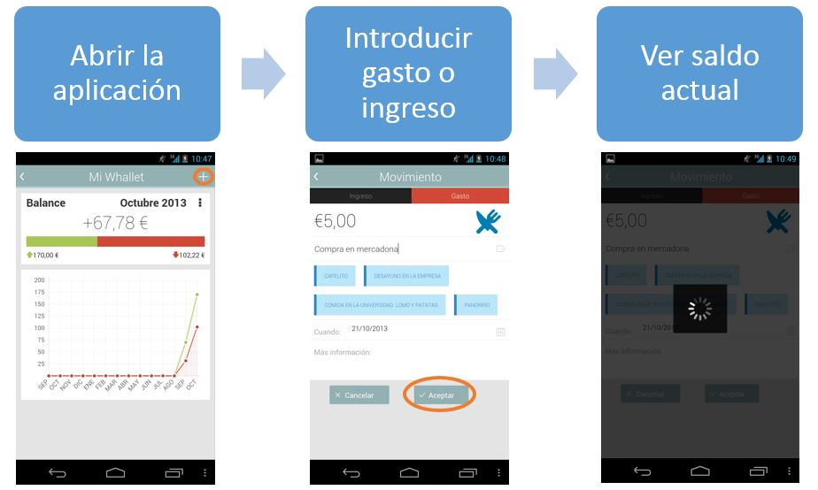
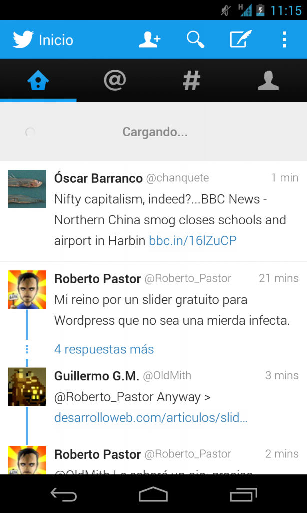
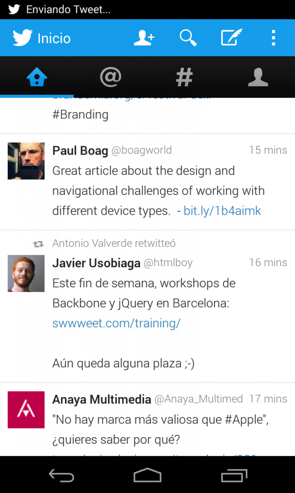

Don't touch me

Flow
La interacción de un usuario con una aplicación, al fin y al cabo, es una sucesión de acciones y respuestas: pulsar un botón, leer datos, hacer una foto… Debemos de procurar que esta interacción siempre sea lo más fluida posible, es decir, que tenga un buen “flow”.
Ahora imagina que vas conduciendo por una carretera. Si en un cruce encuentras un semáforo en rojo, paras y esperas a qué los otros coches pasen. Pero, ¿y si en una autopista encuentras un semáforo, sin cruce y sin salida alguna? En ese caso no te parecerá bien el tener que parar y la espera dará la impresión de ser más larga.
Antes de seguir
Me gustaría aclarar que la versión de la aplicación Whallet que se utiliza como ejemplo está obsoleta. Dicha aplicación, en su última versión ha corregido todos los fallos que aquí se muestran gracias al trabajo de su equipo :).
Don't touch me, I'm loading
Bloquear la interfaz al usuario es algo que debemos de intentar evitar a toda costa, a nadie le gusta esperar. Desde el punto de vista de un móvil, generalmente nuestro patrón de uso de aplicaciones es en períodos cortos de tiempo, pero frecuentes. Por ello el flujo es importante y el tiempo que se invierte en él también. Si hacemos esperar constantemente a nuestros usuarios para enviar datos o recibirlos, hay algo no estamos haciendo bien.
Podemos analizar la aplicación móvil de Whallet, una aplicación que utilizo para llevar mis finanzas personales. Si pensamos en una situación típica de uso, podemos pensar en una tienda: entramos, compramos algunos artículos, pagamos, lo anotamos en la aplicación y vemos el saldo. El flujo de esta acción es:

Flujo de insertar un nuevo movimiento en Whallet
¿Por qué la última vista no es la de “Balance” al igual que la primera? Porque personalmente, en este punto ya he cerrado la aplicación. En recibir los datos sobre una red 3G y cargar la primera vista, tarda unos 10 y una vez que pulsamos en aceptar tarda unos 7 segundos en subir el nuevo movimiento. Toda esta espera es con la interfaz bloqueada sin ofrecer posibilidad alguna a seguir interaccionando con la aplicación.
Si pensamos en cuanto tiempo empleamos en introducir el movimiento, podríamos decir que unos 15 segundos, un tiempo menor que el de carga de la aplicación. Como vemos, nos llevamos más tiempo esperando que interaccionando con la aplicación.
El tiempo ideal de bloqueo de una interfaz debería ser 0, lo cual a efectos prácticos es imposible. No obstante, podemos proponer una pequeña regla: el tiempo de bloqueo de la interfaz debe de ser menos del 20% del tiempo de interacción medio de una acción.
Pero… yo necesito cargar
Todas las aplicaciones necesitan cargar algún dato, ya sea a través de una red o de una base de datos local.* Lo importante es evitar bloquear la interfaz, nunca evitar cargar datos, la información es el corazón de toda aplicación.*
Un gran ejemplo de gestión del tiempo de bloqueo es la aplicación de Twitter. Solo tenemos que pensar en ella: al abrirla tenemos los últimos tweets cargados y podemos deslizarnos por ellos mientras se cargan los nuevos. Si queremos cargar nuevos, nos aparece un diálogo de carga mientras en segundo plano obtiene los datos.

Cargando nuevos tweets en Twitter
Otra acción típica de twitter es ver los detalles de un tweet. Si pulsamos en uno, directamente tenemos la vista de este con su información básica mientras la aplicación carga los datos restantes: retweets, favoritos, menciones…
Al escribir un nuevo tweet y enviarlo, este se coloca en nuestra barra de notificaciones devolviendo el control al usuario en el "timeline" sin bloquear en ningún momento la interfaz.

Enviando un tweet
Como vemos twitter no evita enviar ni recibir datos, solo omite ese paso al usuario y le devuelve el control de la aplicación en todo momento. No hay cortes en el flujo de la aplicación, las esperas se difuminan de tal manera que parece que no existen.
La clave está en la oscuridad
La clave es intentar ejecutar en segundo plano tantas acciones que no requieran interacción con el usuario como sea posible. Una espera de unos segundos no importa, pero como hemos visto con Whallet, si para ejecutar una acción, en mi flujo hay dos esperas, es decir, dos semáforos en la autopista, la espera puede provocar que coja el desvío a la siguiente aplicación.